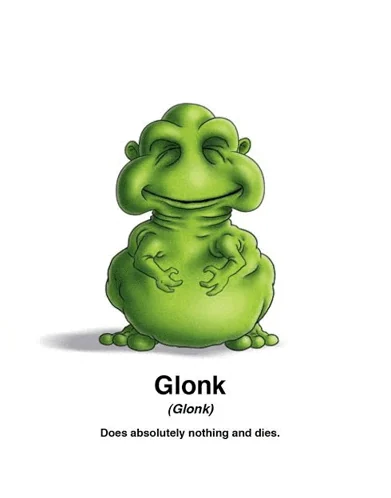

The designation
When we defeat someone in a video game, that opponent is officially designated a Glonk. An unfortunate title, earned through defeat.
For too long, Glonks have spread across our gaming lobbies without consequence. That ends with us.

When we defeat someone in a video game, that opponent is officially designated a Glonk. An unfortunate title, earned through defeat.
Glonks are everywhere: careless pushes, questionable strategies, and yet another lobby that underestimated the wrong people.
Spot a Glonk. Engage in the match. Eliminate the threat. Record another Glonk defeat and move on to the next game.
Wherever a Glonk appears, the Annihilator is not far behind. Dedicated to removing Glonks from matches with ruthless efficiency.
Watch on Twitch ↗The second half of the operation. Together, the two enforcers take the campaign into every lobby they enter.
View the Steam group ↗Notice a suspicious opponent in the match.
Execute the play. The scoreboard does not lie.
Defeat the Glonk in-game and clear the lobby.
There are always more Glonks.
We didn't choose this fight. The matchmaking system chose it for us. Every win is one less Glonk standing between us and victory.
Visit GLONKSMUSTDIE on Steam ↗Glonk is our gaming nickname for defeated opponents. All exterminations on this page refer to virtual opponents and in-game wins, never real-world violence or harassment.